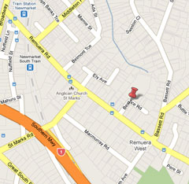

-
Uiterwaardenbeheer dashboard
Dashboard
Viewer

map 1
map 2
map 3
map 4
map 5
map 6
Voeg een Geoplaza kaart toe..
Voeg een kaart toe...
-- Ecotopen eerste cyclus (1997) --
Vegetatiestructuur
Ruwheid
Biomassa
-- Ecotopen tweede cyclus (2005) --
Vegetatiestructuur
Ruwheid
Biomassa
-- Ecotopen derde cyclus (2008) --
Vegetatiestructuur
Ruwheid
Biomassa
Topografische kaart
NLR luchtfoto's
Bebouwdeuiterwaard
Voeg een widget toe...
-- Ecotopen tweede cyclus (1997) --
Ecotoop totale oppervlakte
-- Ecotopen tweede cyclus (2005) --
Ecotoop totale oppervlakte
-- Ecotopen tweede cyclus (2008) --
Ecotoop totale oppervlakte
Biomassa opbrengst
-- FeatureInfo--
Object attributen weergave